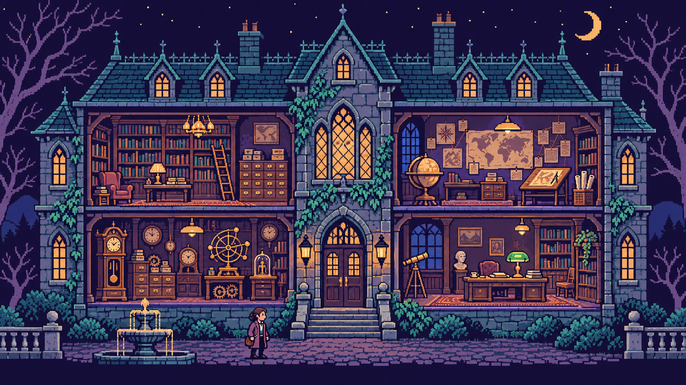

THE HOUSE OF EVIDENCE / 01
A mystery is only as good
as its sources.
Four rooms. One disputed promise. Bring back a brief you can defend.

FICTIONAL CASE · NO MODEL CALLS · LOCAL ONLY
01 / PRESERVE
The library
FROM THE GAME TO THE CODE